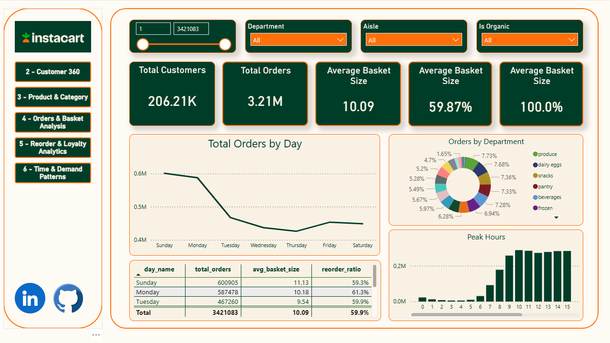
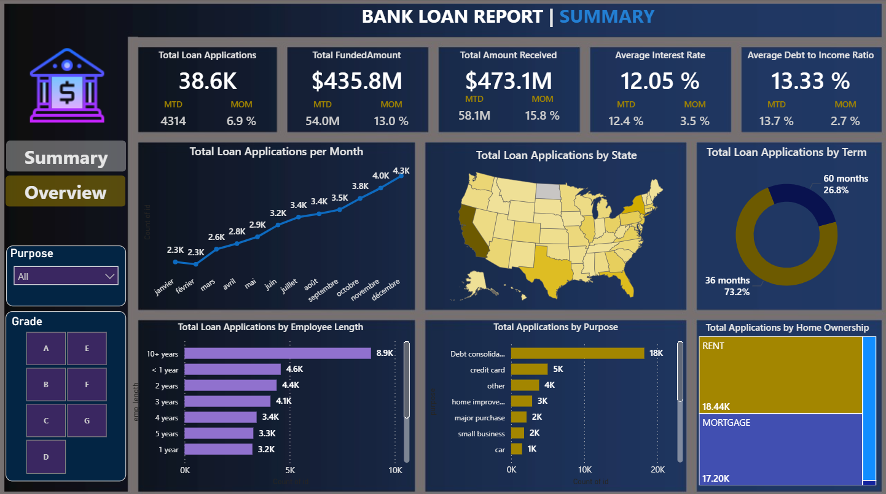
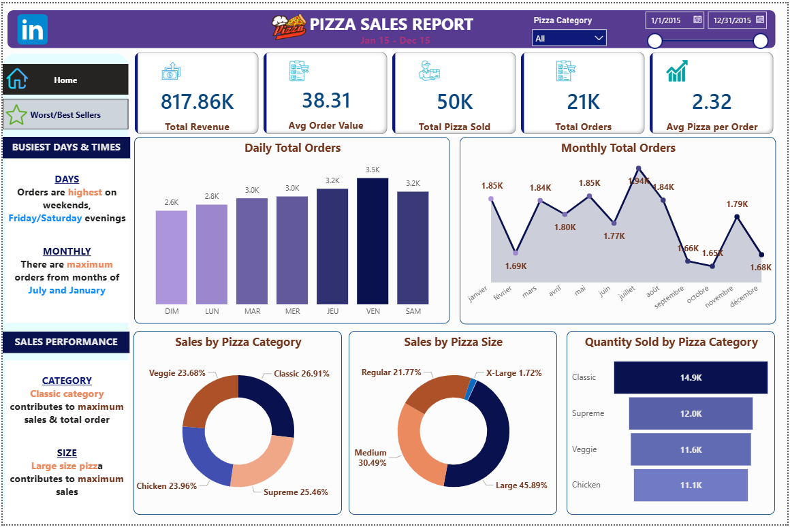
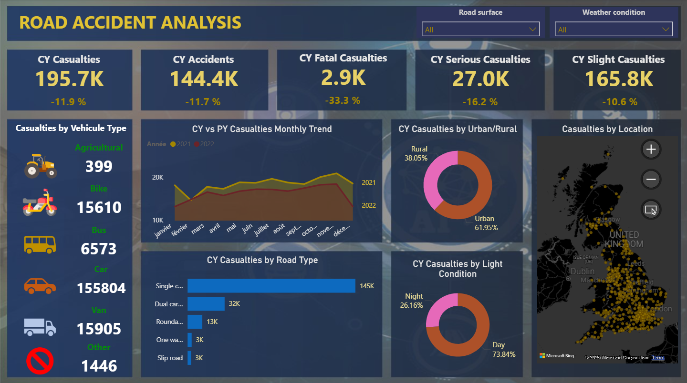

Je suis un analyste de données et intelligence d'affaires avec une base unique : plus de 15 ans d'expérience dans des environnements d'ingénierie et opérationnels à haute criticité. De l'analyse géophysique chez Schlumberger à la coordination de performance dans les secteurs de l'énergie et de la construction, j'ai appris que les données ne valent que par les décisions qu'elles permettent.
Ma mission est d'aider les organisations à combler le fossé entre les données brutes complexes et les informations stratégiques nécessaires pour croître, optimiser et diriger.
Contrairement aux analystes traditionnels, j'apporte une mentalité d'ingénieur à chaque projet. Je ne construis pas seulement des tableaux de bord ; je construis des systèmes. Mon expérience en contrôle qualité, conformité et documentation de processus garantit que vos données ne sont pas seulement « jolies » mais précises, sécurisées et régies par les meilleures pratiques de l'industrie.

Modélisation dimensionnelle (schéma en étoile) et ingénierie de métriques via SQL. Développement d'un tableau de bord interactif sous Power BI incluant des KPI avancés. Mise en place d'une narration de données adaptée aux différents profils d'utilisateurs.

Création d'un tableau de bord Power BI pour analyser les données de prêts, identifier les tendances et les risques. Validation des résultats avec SQL et Python pour assurer l'exactitude des données et des insights.

Conception d'un tableau de bord Power BI pour le suivi des KPI de vente et l'identification de tendances. Utilisation de SQL et Python pour la validation des données et le contrôle qualité.

Analyse des données pour identifier les causes et catégories d'accidents ainsi que les zones géographiques à risque. Développement d'un tableau de bord Power BI et contrôle des données avec SQL.
Collège Bois de Boulogne (Montréal)
Programme d'intelligence d'affaires et analyse de données
Certification Microsoft
Certification officielle Microsoft Power BI
Certificat Professionnel IBM
Certificat professionnel d'analyste de données IBM
Équivalent Baccalauréat Québécois (MIFI)
Génie géophysique appliqué
Je suis disponible pour des mandats freelances, de la création de tableaux de bord ponctuels au conseil en stratégie de données à long terme.
Longueuil (QC), Canada
chakib.bel@gmail.com